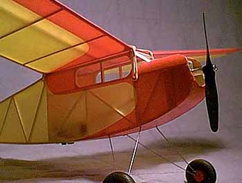
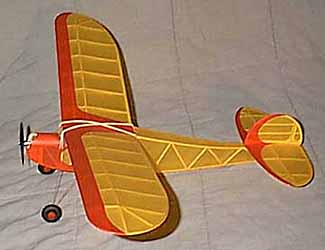

|  | This sport model is a reduced version of Sal Taibi's Famous Powerhouse built from A.A. Lidberg plans. Power is a HiLine Micro-4 with 2 50 ma batteries. Like the full sized original, it is a great flyer. With a full charge, it will do 3 minutes indoors, climbing to over 175 feet before the glide begins. Obviously a DT will be necessary for outdoor flying with this kind of performance, so for now, it is restricted to indoors, or very short charges outside. |
|
This model is quite strong, despite the stick and tissue construction. One of its first flights in Moffett bumped a girder and shed the wing. Despite a drop onto concrete of nearly 40 feet, the model was undamaged, and flew again almost immediately.
A.A. Lidberg offers plans and kits for this model, as well as a number of other Old Timer power models. They make up a series of designs reduced for smaller flying sites, and less investment of building time and materials. After watching Jason's Powerhouse fly so well, I have added a few new designs to my own "must build" list. |
 |
Copyright 1998, Thayer Syme. All rights reserved